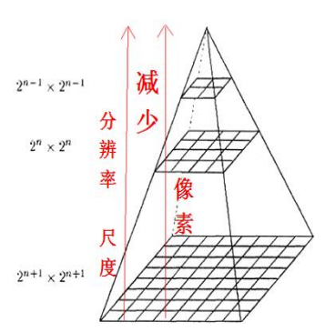
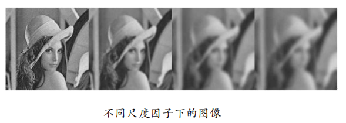
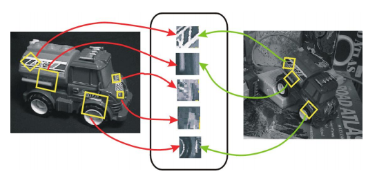
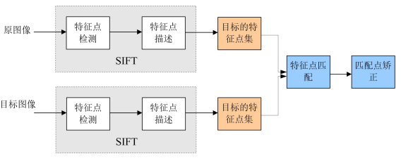
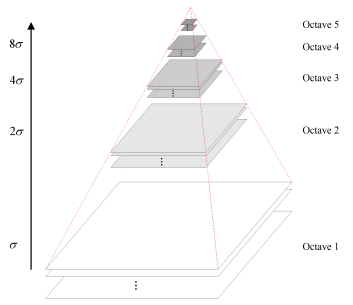
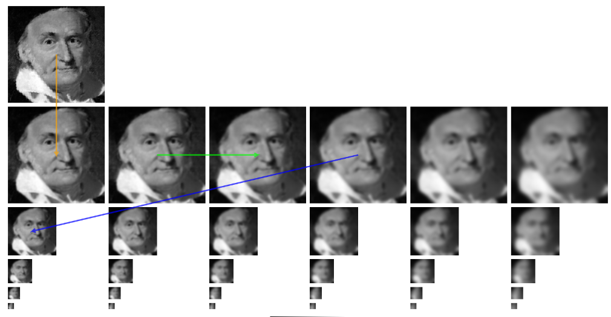
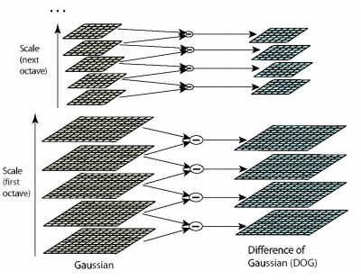
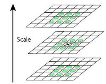
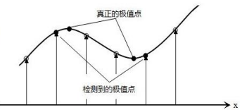
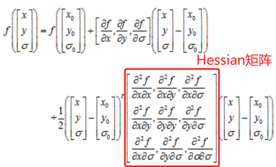

SIFT算法
尺度空间
尺度
尺度的定义
现实世界的物体由不同尺度的结构所组成，在人的视觉中，对物体观察的尺度不同，物体的呈现方式也不同。从测量的角度来说，对物体的测量数据必然是依赖于某个尺度的，例如在测量一个人的身高时，我们常以厘米为基本单位，但测量机械零件的尺寸时，就要精确到微米甚至纳米。
为什么要讨论尺度空间
对计算机视觉而言，用机器视觉系统分析未知场景时，计算机并不知道图像中物体的尺度。我们需要同时考虑图像在多尺度下的描述，获知物体的最佳尺度。
另外，如果某些特征点在各种尺度中都存在，那么这些特征点就更具有本质上的特征，或者说这些特征点具有尺度不变性。
视觉领域的尺度空间理论
- 基本思想：在图像信息处理模型中引入一个被视为尺度的参数，通过连续变化尺度参数获得不同尺度下的视觉处理信息，然后综合这些信息以深入地挖掘图像的本质特征。
- 尺度空间方法将传统的单尺度视觉信息处理技术纳入尺度不断变化的动态分析框架中，因此更容易获得图像的本质特征。
- 图像的尺度空间表达指的是图像在所有尺度下的描述。
具体操作中，尺度空间理论是通过对原始图像进行尺度变换，获得图像多尺度下的尺度空间表示序列，对这些序列进行尺度空间主轮廓的提取，并以该主轮廓作为一种特征向量，实现边缘、角点检测和不同分辨率上的特征提取等。
尺度表示方法
金字塔影像
金字塔影像是一种较经典的尺度表示方法，结合了降采样操作和平滑处理，它的一个很大的好处是：自下而上每一层的像素数都不断减少，会大大减少计算量，而缺点是这种自下而上的金字塔在尺度量化方向显得较为粗糙。
- 图像金字塔是以多分辨率来解释图像的一种结构。
- 一般按照$2^n(n=0,1,2…)$取平均得到。
- 最底层的影像对应原始影像。
- 通过每$2\times 2=4$个像素平均，即可构成$2$级影像级。即，每一级（$2^i$）影像的像素总数对于前一级（$2^{i-1}$）影像以4的倍数缩小（也可以通过$3 \times 3$各平均像素来建立影像级）。如此类推，即可构成多级金字塔影像。
- 构成金字塔的层数，应当根据影像的分辨率、影像可能的噪声、影像的大小及相关计算速度来确定。常采用高斯金字塔影像生成算法。

图像的多尺度空间表达
对于一个N维信号$f:R^N→R$,它的尺度空间$L:R^N \times R_+ →R$定义为：
- 当采用不同尺度的平滑函数对同一图像进行滤波时，得到的一簇图像就是原始图像相对于该平滑函数的尺度空间，$\sigma$为尺度空间坐标。
- 构建高斯尺度空间的主要思想是在精细尺度上的信息随着尺度参数值的增加而逐渐地被抑制，尺度从粗到细的变化中，不会产生新结构。
- 在高斯尺度空间下，只是对图像作了卷积，图像的分辨率和像素仍然没有改变，只是细节平滑了，而传统的影像金字塔关键在降采样，即降低图像分辨率。
 - 高斯尺度空间表示了图像在不同尺度下的低频信号，而代表边缘以及角点等特征的高频信号丢失。）。
- 同一类型特征点和边缘在不同的尺度上具有因果性，即当尺度变化时，新的特征点可能出现，而老的特征点可能移位或消失。这种因果性带来的含糊性是固有、不可避免、无法消除，但能减小的。
SIFT算法

SIFT简介
SIFT特点
- SIFT特征是图像的局部特征，其对旋转、尺度缩放、亮度变化保持不变性，对于视角变化、仿射变换、噪声也保持一定程度的稳定性。
- 独特性好，信息量丰富，适用于在海量特征数据库中进行快速、准确的匹配。
- 多量性，即使少数的几个物体也可以产生大量SIFT特征向量。
- 可扩展性，可以很方便的与其他形式的特征向量进行联合。
- 经过优化的SIFT算法可满足一定的速度需求。
SIFT算法可以解决的问题
- 目标的旋转、缩放、平移（RST）
- 图像仿射/投影变换（viewpoint）
- 光照影响（illumination）
- 目标遮挡（occlusion）
- 杂物场景（clutter）
- 噪声
SIFT算法实现步骤
SIFT实质可以归结为在不同尺度空间上查找特征点（关键点）的问题。

关键点
关键点是十分突出的点，不因光照条件的改变而消失，比如角点、边缘点、暗区域的亮点以及亮区域的暗点，既然两幅图像中有相同的目标，那么使用某种方法分别提取各自的稳定点，这些点之间会有相互对应的匹配点。
具体说，可以说关键点是不同尺度空间的图像下检测出的具有方向信息的局部极值点。有尺度、方向、大小三个特征。
SIFT算法实现
建立高斯金字塔
建立高斯金字塔可以直观的理解为模拟近大远小和距离物体越近看的越清楚，距离物体越远看的越模糊的人眼视觉特征，从而构建一个多维尺度空间。
因此，高斯金字塔的构建可分为两步：
- 对图像做高斯平滑
- 对图像做降采样

一幅图像可以产生几组（octave）图像，一组图像包括几层（interval）图像。图像的底层是由前一组图像的倒数第三层图像隔点采样生成的。这样可以保持尺度的连续性。如下图所示，第一组的底层图像是第二组图像倒数第三层图像降采样得到。

高斯金字塔的尺度空间坐标
可见，相邻两组的同一层尺度为2倍关系。
其中：
$n$：每组要提取特征的图像张数
$k$：$2^{1/n}$
高斯金字塔的组数与层数
其中，$M$，$N$分别为图像的行数和列数。
高斯金字塔的初始尺度
原作者建议$\sigma_0$为1.6，但是大部分图片是由相机摄取的，相机本身就会对图像做一次高斯模糊（相机所做的高斯模糊经验值为$\sigma =0.5$），因此实际的$\sigma_0 =\sqrt{1.6^2-0.5^2}=1.52$，以保证在已经被高斯模糊的情况下再叠加新的高斯模糊后达到预设的理想值。
高斯金字塔的-1组尺度
在构建高斯金字塔前还可以先对原图做一次升采样（通常扩大一倍），以尽可能多的保留原始图像信息。升采样后的模糊参数$\sigma_{-1}=\sqrt{1.6*2-(2\times 5)^2}=1.25$
不过这步操作不是必需的。
关键点初步检测
建立高斯差分金字塔
差分金字塔的是在高斯金字塔的基础上操作的，其建立过程是：在高斯金子塔中的每组中相邻两层相减（下一层减上一层）就生成高斯差分金字塔。

从直观上可以这么理解高斯差分金字塔：图像经过高斯卷积后，平滑的区域或点变化不大，而纹理复杂（比如边缘，点，角等）区域由于被平滑后，一定会产生较大变化，这样变化很大的点就是特征点。因此高斯平滑前后图像做差，就可以针对这些特征点进行操作。
极值点定位
关键点是由DOG空间的局部极值点组成的。为了寻找DoG函数的极值点，每一个像素点要和它所有的相邻点比较，看其是否比它的图像域和尺度域的相邻点大或者小。

中间的检测点和它同尺度的8个相邻点和上下相邻尺度对应9×2个点共26个点比较，以确保在尺度空间和二维图像空间都检测到极值点。
设高斯金字塔每组共有$S$层，则高斯差分金字塔每组就有$S-1$层，而每组中最顶层和最底层无法计算极值点，最后只能得到$S-3$张图像的极值点。因此，$n$与$S$之间存在着紧密联系。
关键点精确定位
上述我们得到的极值点是离散空间中的极值点，我们还需要通过拟合三维二次函数来精确确定关键点再连续空间中的位置和尺度，同时去除低对比度的关键点和不稳定的边缘响应点(因为DoG算子会产生较强的边缘响应)，以增强匹配稳定性、提高抗噪声能力。
极值点精确定位
离散空间的极值点并不是真正的极值点，下图显示了二维函数离散空间得到的极值点与连续空间极值点的差别。我们需要利用离散空间点插值得到连续空间极值点，这种方法叫做子像素插值。

设找到的极值点为$X_0(x_0,y_0,\theta_0)$，我们可以在尺度空间进行泰勒展开，保留2阶系数，则展开式就近似等于原函数。展开式为：

其中偏导数用下列公式求出（$h$一般取1）：
用向量形式表示即为：
其中，$\hat{X}$表示$X_0$的偏移量。
若求其极值点，只需令其导数为0，求得：
再回代至$f(X)$，求得真正极值为：
同时，出现以下两种情况之一时，我们也要舍去该极值点：
- 当$\hat{X}$在任意维度上（$x$，$y$或$\theta$）大于0.5时，说明插值中心已经偏移到它的邻近点上，所以必须改变当前关键点的位置，同时在新的位置上反复插值直到收敛。如果超出所设定的迭代次数（原作者设置迭代次数阈值为5）或者超出图像边界的范围，就删除该离散空间中的极值点。
- 过小的点易受噪声的干扰而变得不稳定，所以也应将小于某个经验值(原作论文中使用0.03)的极值点删除。